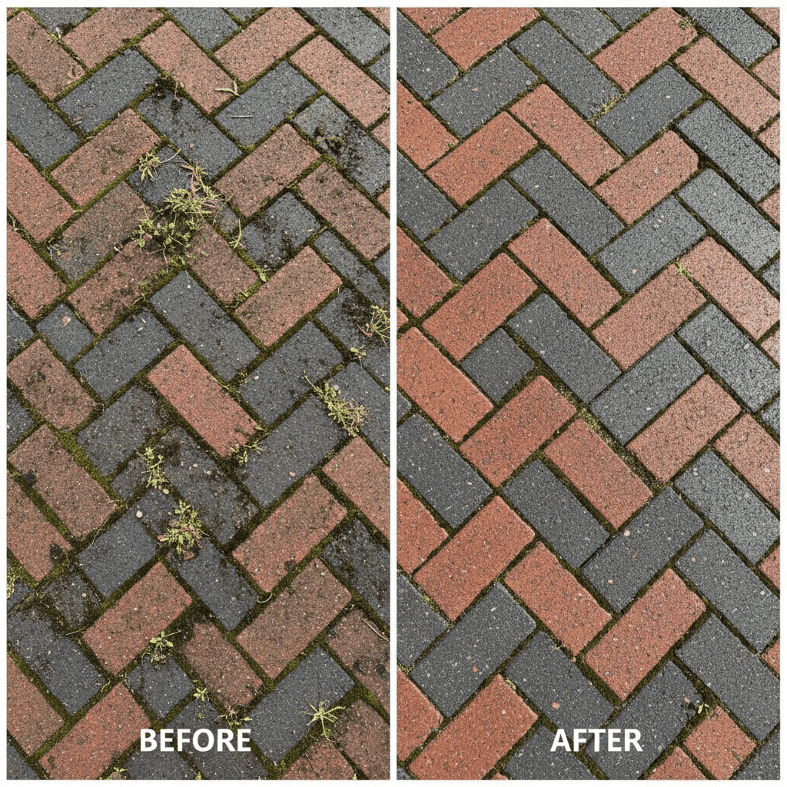

Professional Block Paving Restoration
Block paving is extremely popular throughout Redhill, Reigate, Horley and Surrey, but it requires proper maintenance to look its best. Over time, block paved driveways and patios become dirty, stained, and overrun with weeds. Our professional block paving cleaning service restores the original appearance and protects your investment.
We specialize in cleaning all types of block paving including concrete blocks, clay pavers, and natural stone setts. Using professional equipment and the correct techniques, we remove stubborn stains, eliminate weeds, restore colour, and can re-sand and seal for long-lasting protection.
Block Paving Services We Offer
Pressure Washing & Deep Cleaning
Our core service removes dirt, moss, algae, oil stains, and general grime from block paving. We use controlled pressure settings that clean effectively without displacing the kiln sand between blocks or damaging the paver surface.
Weed Removal
Weeds growing between blocks create an unkempt appearance and can cause structural problems if left unchecked. Our pressure washing removes weeds and their roots from joints completely.
Re-Sanding
After cleaning, we can re-sand joints using quality kiln-dried sand. Proper sanding stabilizes the blocks, prevents weed growth, and improves drainage. We use weed-resistant jointing sand for enhanced protection.
Sealing & Protection
Block paving sealing provides multiple benefits: enhances colour, prevents staining, inhibits weed growth, and makes future cleaning easier. We use professional-grade sealants designed for block paving.
Benefits of Professional Block Paving Cleaning
- Restore Original Colour - Remove years of dirt and bring back vibrant colours
- Eliminate Weeds - Complete weed removal from joints
- Remove Stubborn Stains - Oil, tyre marks, and organic staining removed
- Prevent Deterioration - Stop organic growth damaging your paving
- Increase Property Value - Well-maintained block paving enhances property appeal
- Extend Lifespan - Proper maintenance means your paving lasts decades longer
See the Difference
A typical block paving transformation in Surrey
Our Block Paving Cleaning Process
1. Inspection & Assessment
We check the condition of blocks and joints, identify problem areas, and assess whether re-sanding will be needed.
2. Pre-Treatment
Stubborn oil stains and heavy organic growth receive specialist treatment to break down contamination.
3. Pressure Washing
Thorough cleaning using appropriate pressure, removing all dirt, weeds, moss, and staining from blocks and joints.
4. Re-Sanding (If Required)
Application of kiln-dried jointing sand to stabilize blocks and prevent weed regrowth.
5. Sealing (Optional)
Application of professional block paving sealant to protect, enhance colour, and simplify future maintenance.
Common Block Paving Problems in Surrey
Block paving in Redhill, Reigate and surrounding areas faces specific challenges:
- Weed Growth - Seeds lodge in joints and grow rapidly, especially in summer
- Moss & Algae - Damp climate encourages green growth, creating slippery surfaces
- Sand Loss - Rain washes away jointing sand, destabilizing blocks
- Oil Stains - Vehicle leaks create dark patches on lighter coloured blocks
- Colour Fading - UV exposure and weathering dulls original colours
- General Dirt Accumulation - Traffic film and grime builds up over years
Our comprehensive cleaning and restoration service addresses all these issues, returning your block paving to excellent condition.
Service Areas
Block paving is particularly common in Horley modern estates and throughout Redhill residential areas. We provide block paving cleaning across all of Surrey including Reigate, Dorking, Banstead, and Crawley. View all areas served
Get Your Free Block Paving Quote
Every block paving job is different - area size, condition, weed growth, and whether you need re-sanding or sealing all affect the final price. That's why we provide free, no-obligation quotes tailored to your specific property.
With our 2-hour callback guarantee, you won't be left waiting. Submit a quote request and we'll call you within 2 hours during business hours (Mon-Sat 8am-6pm) to discuss your requirements and provide accurate pricing. Request your free quote now.